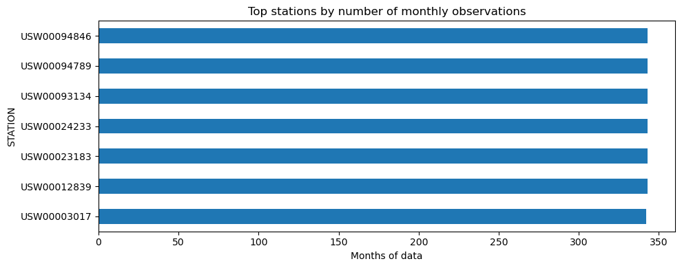
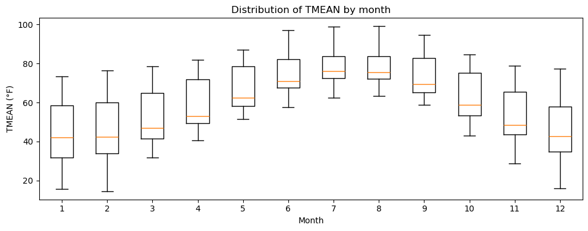
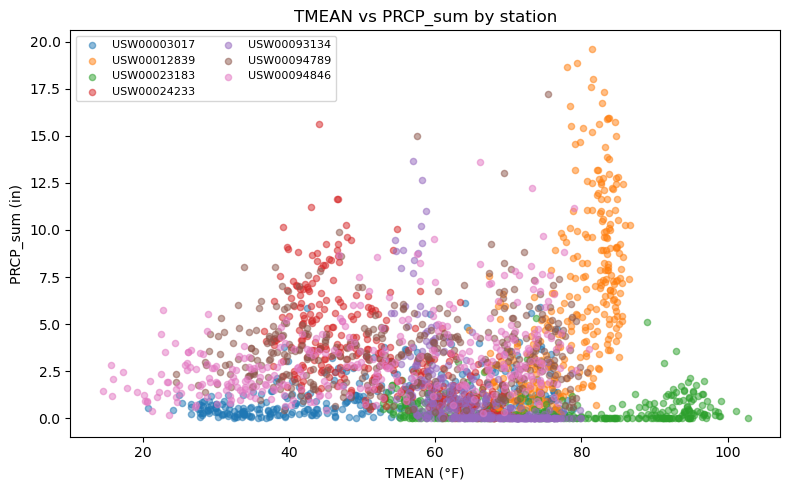
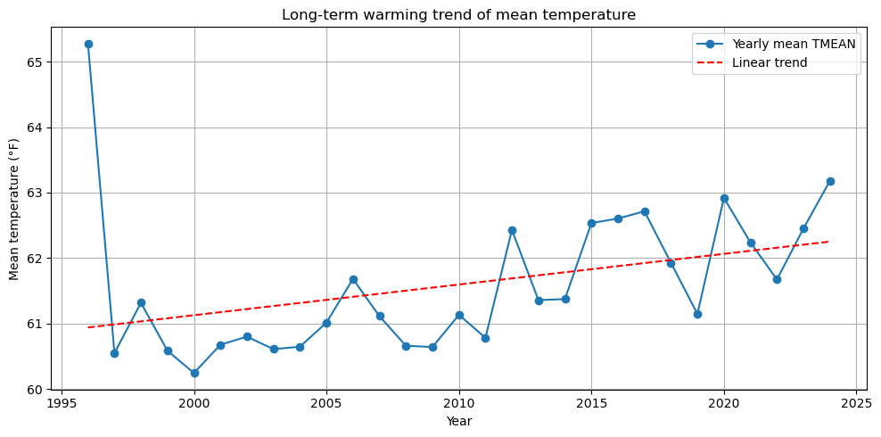
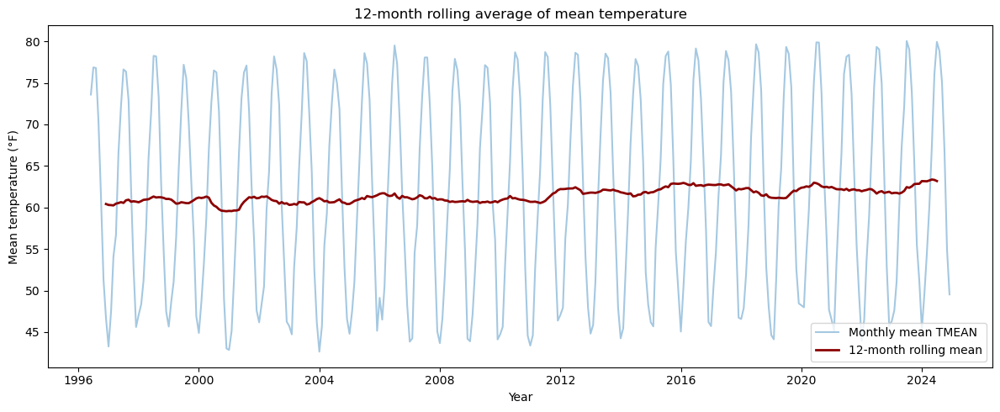
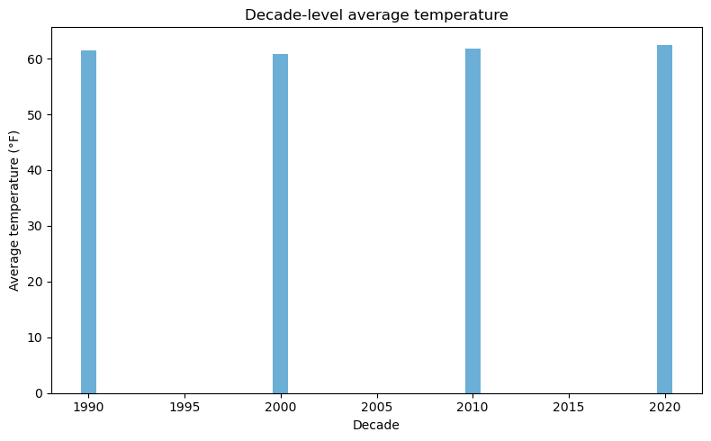
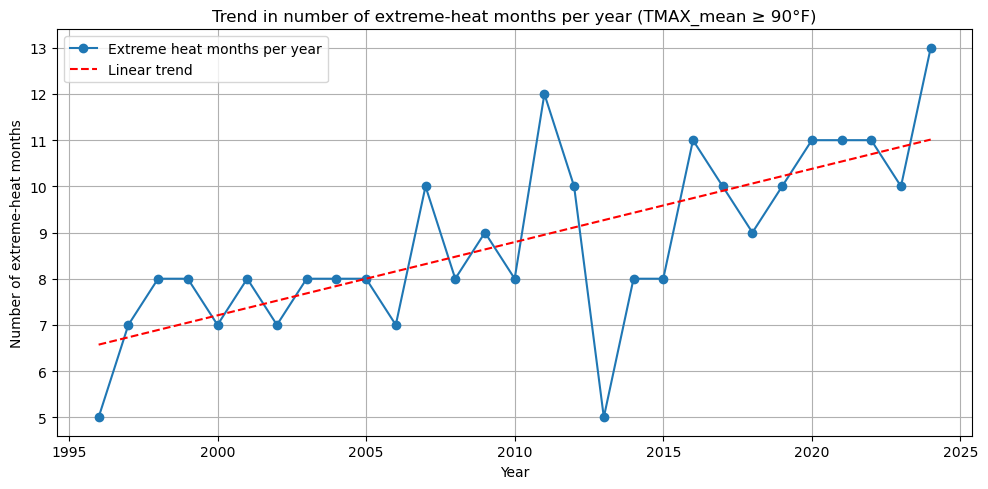
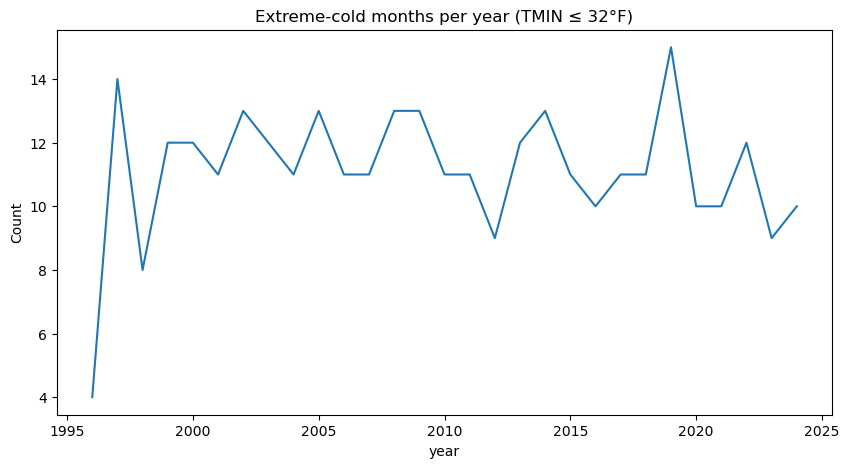

import pandas as pdimport matplotlib.pyplot as plt# Make plots a bit largerplt.rcParams["figure.figsize"] = (10, 4)# Load processed monthly datadf = pd.read_csv("../data/monthly_data.csv")# Convert ym column to datetimedf["ym"] = pd.to_datetime(df["ym"])print("Shape:", df.shape)print("\nColumns:", df.columns.tolist())print("\nData types:")print(df.dtypes)
Shape: (2400, 8)
Columns: ['STATION', 'year', 'month', 'PRCP_sum', 'TMAX_mean', 'TMIN_mean', 'TMEAN', 'ym']
Data types:
STATION object
year int64
month int64
PRCP_sum float64
TMAX_mean float64
TMIN_mean float64
TMEAN float64
ym datetime64[ns]
dtype: object
# Look at the first few rowsdf.head()
STATION
year
month
PRCP_sum
TMAX_mean
TMIN_mean
TMEAN
ym
0
USW00003017
1996
6
1.74
85.083333
53.291667
69.187500
1996-06-01
1
USW00003017
1996
7
1.01
87.967742
58.774194
73.370968
1996-07-01
2
USW00003017
1996
8
0.56
87.064516
56.129032
71.596774
1996-08-01
3
USW00003017
1996
9
2.34
74.600000
46.900000
60.750000
1996-09-01
4
USW00003017
1996
10
0.39
64.903226
36.774194
50.838710
1996-10-01
# Basic summary statistics for numeric columnsdf.describe()
year
month
PRCP_sum
TMAX_mean
TMIN_mean
TMEAN
ym
count
2400.000000
2400.000000
2400.000000
2393.000000
2393.000000
2393.000000
2400
mean
2010.202917
6.549583
2.654263
70.816142
52.269247
61.542695
2010-08-31 05:10:48.000000256
min
1996.000000
1.000000
0.000000
23.428571
5.678571
14.553571
1996-06-01 00:00:00
25%
2003.000000
4.000000
0.470000
58.516129
40.700000
49.133333
2003-07-01 00:00:00
50%
2010.000000
7.000000
1.710000
73.580645
53.466667
63.633333
2010-09-01 00:00:00
75%
2017.000000
10.000000
3.762500
83.166667
64.266667
73.950000
2017-11-01 00:00:00
max
2024.000000
12.000000
19.620000
114.677419
90.806452
102.741935
2024-12-01 00:00:00
std
8.256824
3.447462
2.975210
17.455531
16.900868
16.951073
NaN
# Count missing values in each columndf.isna().sum()
STATION 0
year 0
month 0
PRCP_sum 0
TMAX_mean 7
TMIN_mean 7
TMEAN 7
ym 0
dtype: int64
Understanding how observations are distributed across stations helps reveal whether the sample is dominated by only a few locations.
ax = station_counts.head(15).sort_values().plot(kind='barh', color='#1f77b4')ax.set_title('Top stations by number of monthly observations')ax.set_xlabel('Months of data')plt.tight_layout()plt.show()

Station-level summary statistics
A station-wise table highlights how average precipitation and temperature differ across the representative locations.
Box plots expose the spread and skew of temperature for each month, helping to quantify seasonality.
month_order =list(range(1, 13))boxed = [df.loc[df['month'] == m, 'TMEAN'].dropna().values for m in month_order]fig, ax = plt.subplots(figsize=(10, 4))ax.boxplot(boxed, labels=month_order, showfliers=False)ax.set_title('Distribution of TMEAN by month')ax.set_xlabel('Month')ax.set_ylabel('TMEAN (°F)')plt.tight_layout()plt.show()
/var/folders/x8/59lsc6h95bz9br5gwthbx0rw0000gn/T/ipykernel_11145/2383152614.py:4: MatplotlibDeprecationWarning: The 'labels' parameter of boxplot() has been renamed 'tick_labels' since Matplotlib 3.9; support for the old name will be dropped in 3.11.
ax.boxplot(boxed, labels=month_order, showfliers=False)

Value distributions
Histogram views of the core numeric fields make it easy to spot skew or potential outliers before modeling.
This scatter plot checks whether wetter months coincide with higher or lower temperatures at different stations.
fig, ax = plt.subplots(figsize=(8, 5))for station, sub in df.groupby('STATION'): ax.scatter(sub['TMEAN'], sub['PRCP_sum'], alpha=0.5, s=20, label=station)ax.set_title('TMEAN vs PRCP_sum by station')ax.set_xlabel('TMEAN (°F)')ax.set_ylabel('PRCP_sum (in)')ax.legend(ncol=2, fontsize=8)plt.tight_layout()plt.show()

Long-term warming trend of TMEAN
import numpy as np# Compute station-averaged monthly TMEAN per yearyearly_trend = ( df.groupby('year')['TMEAN'] .mean() .reset_index())# Fit a linear trend linez = np.polyfit(yearly_trend['year'], yearly_trend['TMEAN'], 1)p = np.poly1d(z)plt.figure(figsize=(10, 5))plt.plot(yearly_trend['year'], yearly_trend['TMEAN'], marker='o', label='Yearly mean TMEAN')plt.plot(yearly_trend['year'], p(yearly_trend['year']), linestyle='--', color='red', label='Linear trend')plt.title('Long-term warming trend of mean temperature')plt.xlabel('Year')plt.ylabel('Mean temperature (°F)')plt.legend()plt.grid(True)plt.tight_layout()plt.show()

12-month Rolling Mean
# 12-month rolling average of temperaturets = ( df.groupby('ym')['TMEAN'] .mean() .sort_index())rolling_12 = ts.rolling(12, center=True).mean()plt.figure(figsize=(12, 5))plt.plot(ts.index, ts.values, alpha=0.4, label='Monthly mean TMEAN')plt.plot(rolling_12.index, rolling_12.values, color='darkred', linewidth=2, label='12-month rolling mean')plt.title('12-month rolling average of mean temperature')plt.xlabel('Year')plt.ylabel('Mean temperature (°F)')plt.legend()plt.tight_layout()plt.show()

Compare warming by decade
# Add a decade columndf['decade'] = (df['year'] //10) *10# Compute decade-level average temperaturesdecade_avg = ( df.groupby('decade')['TMEAN'] .mean() .reset_index())plt.figure(figsize=(8, 5))plt.bar(decade_avg['decade'], decade_avg['TMEAN'], color='#6baed6')plt.title('Decade-level average temperature')plt.xlabel('Decade')plt.ylabel('Average temperature (°F)')plt.tight_layout()plt.show()

heat_threshold =90# Fahrenheit# Create a column indicating extreme heat monthsdf['extreme_heat'] = (df['TMAX_mean'] >= heat_threshold).astype(int)# Count number of extreme-heat months per yearheat_trend = ( df.groupby('year')['extreme_heat'] .sum() .reset_index())# Fit a simple linear trendimport numpy as npz = np.polyfit(heat_trend['year'], heat_trend['extreme_heat'], 1)p = np.poly1d(z)# Plotplt.figure(figsize=(10, 5))plt.plot(heat_trend['year'], heat_trend['extreme_heat'], marker='o', label='Extreme heat months per year')plt.plot(heat_trend['year'], p(heat_trend['year']), linestyle='--', color='red', label='Linear trend')plt.title('Trend in number of extreme-heat months per year (TMAX_mean ≥ 90°F)')plt.xlabel('Year')plt.ylabel('Number of extreme-heat months')plt.grid(True)plt.legend()plt.tight_layout()plt.show()

heat_station = df.groupby(['year','STATION'])['extreme_heat'].sum().reset_index()plt.figure(figsize=(10,5))for s, sub in heat_station.groupby('STATION'): plt.plot(sub['year'], sub['extreme_heat'], alpha=0.5, label=s)plt.title('Extreme-heat months per year by station')plt.xlabel('Year')plt.ylabel('Extreme-heat months')plt.legend(ncol=2, fontsize=8)plt.grid(True)plt.show()
plt.figure(figsize=(12,6))for st in df['STATION'].unique(): tmp = df[df['STATION']==st].groupby('year')['TMEAN'].mean() plt.plot(tmp.index, tmp.values, label=st)plt.legend()plt.title("Long-term mean temperature trend by station")plt.xlabel("Year")plt.ylabel("TMEAN (°F)")plt.show()
annual_prcp = df.groupby('year')['PRCP_sum'].sum()annual_prcp.plot(figsize=(10,5))plt.title("Annual total precipitation trend")plt.xlabel("Year")plt.ylabel("Total precipitation (mm or inch)")plt.show()
cold = df[df['TMIN_mean'] <=32]cold_yearly = cold.groupby('year').size()cold_yearly.plot(figsize=(10,5))plt.title("Extreme-cold months per year (TMIN ≤ 32°F)")plt.ylabel("Count")plt.show()

import seaborn as snsplt.figure(figsize=(6,5))sns.heatmap(df[['TMAX_mean','TMIN_mean','TMEAN','PRCP_sum']].corr(), annot=True, cmap='coolwarm')plt.title("Correlation heatmap")plt.show()